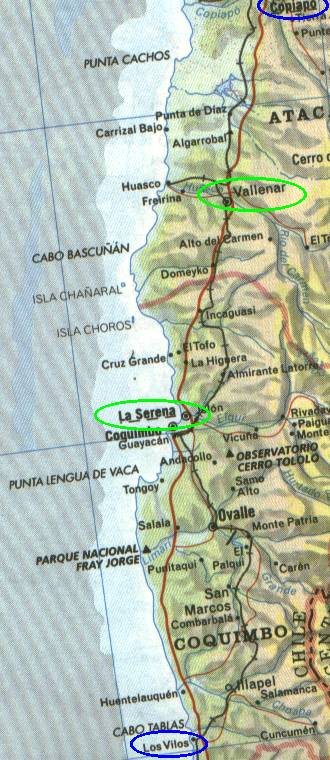

← anterior | principal | próxima →

Passamos esse trecho todo dirigindo. Não vimos coisas interessantes no caminho.
Em los vilos ficamos no hotel "el conquistador" (ainda acho que aquilo era um motel :)
O dono é joaquim vidal alvarez, um velhinho muito camarada com quem conversamos bastante antes de partir. Ele é colecionador de antigüidades e faz artesanato, tem uma oficina na garagem.
O carinha conhecia tudo por aquelas bandas e nos deu altas dicas para nosso caminho, como evitar pedágio, por onde passar e ver coisas, onde comer na estrada, como sair do chile. O cara é 10 mesmo, ele nos ajudou muito.